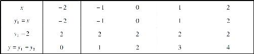
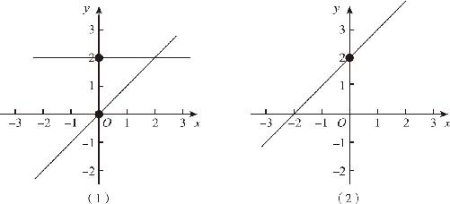
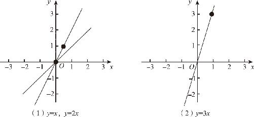
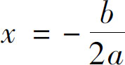
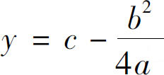
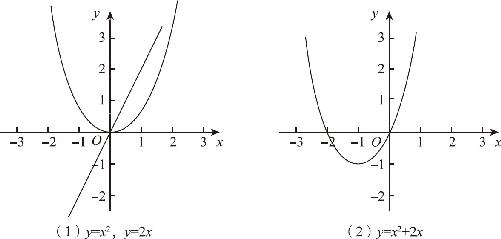

如果不是在函数的基础上加减一个数字，而是再加减另一个函数，又会发生哪些变化呢？
先从最简单的函数开始：比如y ＝x 的函数和y ＝2的函数相加以后，结果会是怎样呢？首先，我们先在坐标轴上画一个y ＝x 的函数图象，然后再画一个y ＝2的函数图象．y ＝x 的函数图象我们已经非常熟悉了，它就是经过原点的一条45°直线；y ＝2的函数图象也很简单，它就是一条和x 轴平行的水平直线，在这条直线上，无论x 的数值是多少，y 的数值都等于2．现在，这两个函数图象作出来了，把它们加在一起，一条斜线加一条直线等于什么？等于两条相交线吗？不对！真要把它们加在一起，我们必须要把两条函数图象上边所有点对应的数值都加起来．
我们知道，函数表示的是y 随着x 的变化而变化的结果．因此函数相加就意味着，我们要把函数中每一个点的y 值对应地相加起来．比如，当x ＝0的时候，y ＝x 这个函数上，y ＝0，我们管它叫y 1吧，y ＝2的这个函数呢，y ＝2，我们管它叫y 2，那么这两个函数图象相加以后，新的点会在哪儿呢？就应该在y 1 ＋y 2的位置上，0＋2＝2，所以新的函数图象肯定是经过（0，2）这一点的．如果按照这个规律继续分析，我们就会发现：当x ＝1的时候，y 1 ＝1，y 2 ＝2，所以新的y 就等于3，按此规律类推，我们就可以不断地从x 轴上的一点出发，作出一条垂线来，先看看它和第一个函数的交点，再看看它和第二个函数的交点，然后，把这两条垂线段相加，就可以得到一个新的点．也就是说，所谓两个函数的图象相加，就是分别看看这两个函数图象上的每一个点距离x 轴有多远，然后把它们的距离加起来．当我们陆陆续续作出来很多点以后，再把这些新的坐标点连接起来，就发现这个曲线正好就是y ＝x ＋2的那条直线．（坐标数据如表14－1所示）
表14－1

这个道理很简单，y ＝x 和y ＝2相加的结果，不就是y ＝x ＋2吗？不过，如果我们从图象上看，结果就会更加简单明了：与x 轴相比，y ＝2的函数图象，本来就是比x 轴增高了2个单位长，所以两个函数图象相加的结果，肯定也就会是在原来的图象基础上上移2个单位．（如图14－1所示）那么，这个规律会不会只适合于常数呢？

图14－1
接下来，我们继续看一看两个线性函数相加的结果：
如果y ＝2x 和y ＝x 两个函数相加，会是什么结果呢？我们仍然严格按照描点连线的方式绘制出函数图象：y ＝x 的图象就是标准的45°斜线，而y ＝2x 的直线倾斜角度比较大．我们把这两条直线相对应的纵坐标的数值相加，得到了一条新的直线，通过描点作图我们发现，最终得到的新的直线正好就是y ＝3x ．对于这条直线，我们怎么理解呢？可以认为这两条直线和x 轴相比，都按逆时针方向往左转了，相加以后就会旋转过一个更大的角度，于是我们就得到了y ＝3x 这条坡度更大的直线．（如图14－2所示）接下来我们再看看二次函数和一次函数相加的结果：

图14－2
我们知道，y ＝x 2 的图象是一条抛物线，y ＝2x 的图象是一条直线，那么两者相加的结果如何呢？在前面我们已经尝试了，y ＝x 2 ＋2x 的曲线仍然是抛物线，只不过它的对称轴会向左移动，会变成

，函数的顶点会移动到
的位置上，由于a ＝1，b ＝2，c ＝0，不难得出新的对称轴就是x ＝－1，顶点坐标为（－1，－1）．（如图14－3所示）如果从函数图象的角度来解释，这一切的结果又是为什么呢？按照直观的方式理解，函数相加的结果不应该是抛物线变窄或者旋转过一个角度吗？
图14－3
仔细分析一下两个函数的图象就明白了：在两个函数图象中，先看x ＞0的这部分图象，就会发现，y ＝x 2 是大于0的，y 随着x 的增大而增大，同样y ＝2x 也是大于0的，y 也会随着x 的增大而增大，因此，这两条函数图象相加的结果，确实是一条坡度更陡的曲线，这样的结果完全符合我们的直观认识，无论我们把它理解为函数图象被拉伸了还是往左旋转了一个角度，都是合理的．
再看x ＜0的这部分图象立刻就全明白了，函数y ＝x 2 的左半边仍然是大于0的，但是y ＝2x 的左半边却是小于0的，而且，在靠近x ＝－1的这一段曲线当中，函数y ＝x 2 上升的坡度非常缓慢，同y ＝2x 下滑的幅度相比，y 增加的部分太小了，于是这就导致了这两条曲线相加的结果是小于0的，这就是函数图象整体下移的原因．不过y ＝x 2 毕竟是二次函数，如果我们从右往左看，当经过x ＝－2这一点以后，y 增加的速度就越来越快了，于是两个函数相加的结果又变成了大于0的，因此这个曲线就和x 轴有了两个交点，一个交点是（－2，0），另一个交点就是原点（0，0）．
最后，如果我们再仔细观察一下抛物线和斜线相加的结果，就会产生一个这样的感觉，好像y ＝x 2 这条抛物线，站在了y ＝2x 的斜面上，但由于它的脚底又圆又滑，结果导致两者相加的时候站不稳，往左下角滑了那么一小段，这就是二次函数和一次函数相加的结果．